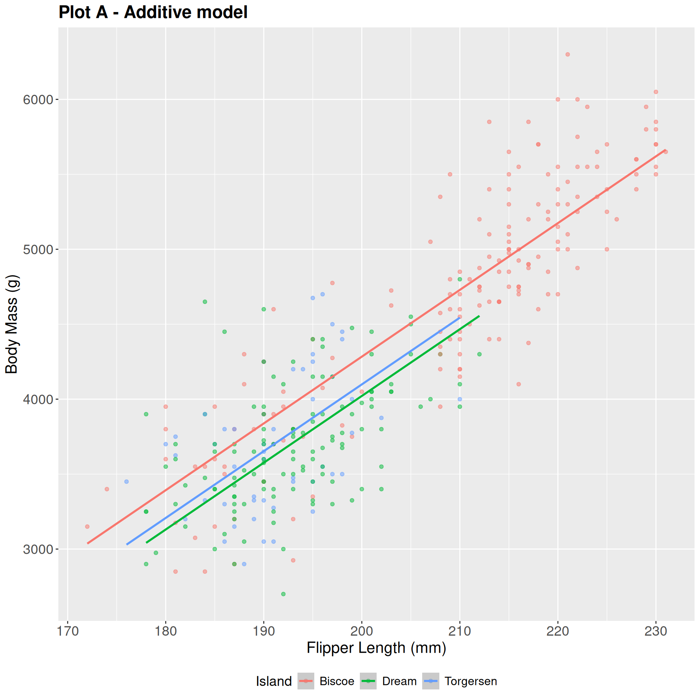
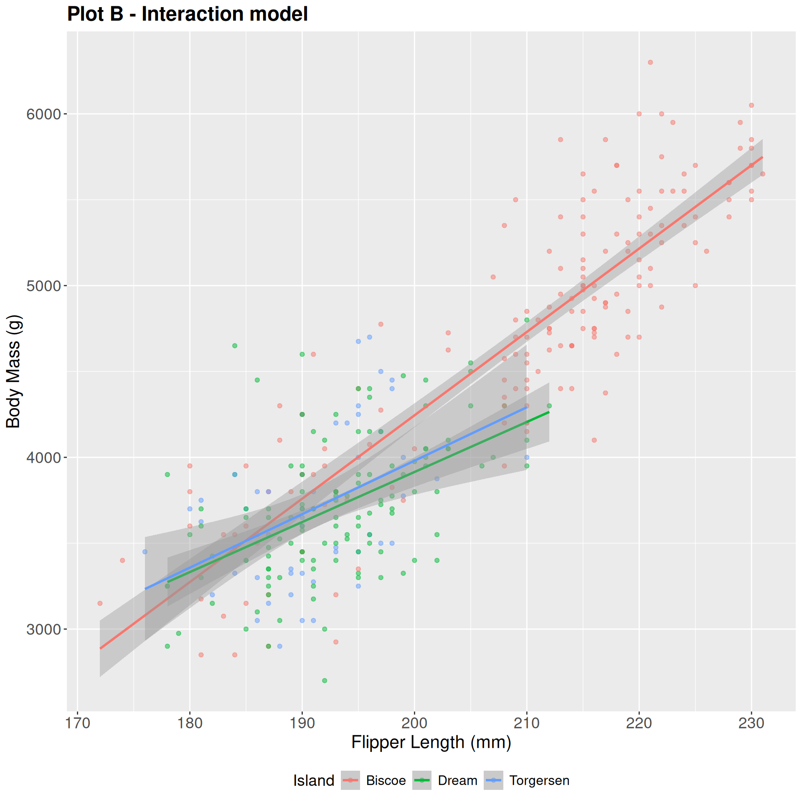
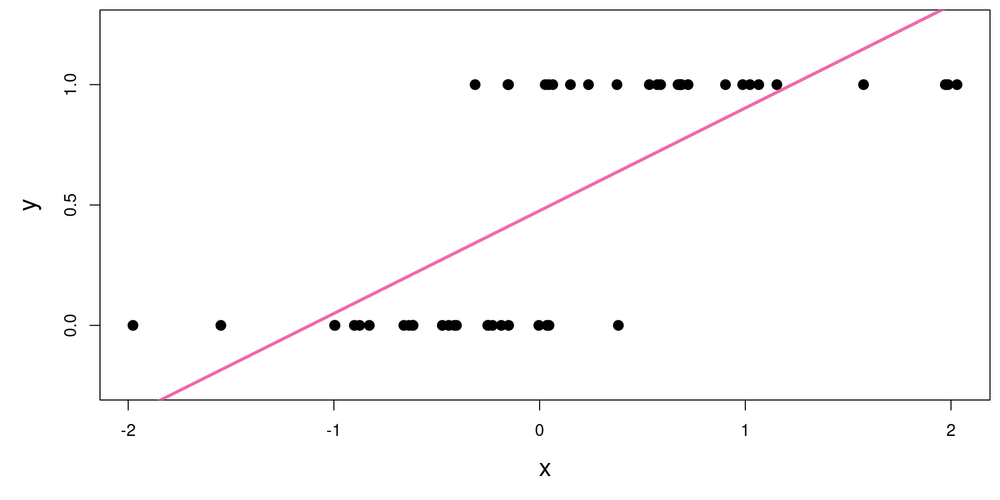
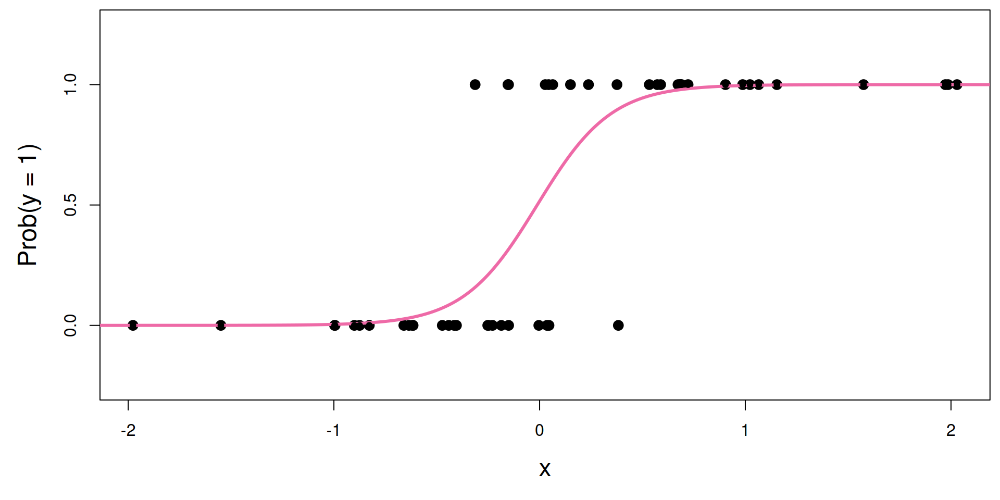
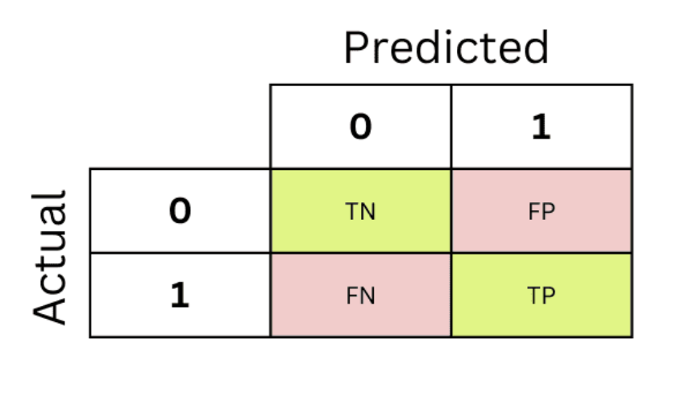

# A tibble: 6 × 3
did_rain temperature humidity
<fct> <dbl> <dbl>
1 no_rain 71.4 52.7
2 rain 66.3 80
3 no_rain 70.3 53.1
4 rain 63.3 88.8
5 rain 60.2 77.5
6 no_rain 76.7 65.9Final Review - June 23
June 23, 2025
Announcement: Office Hours/Exam
-
Tuesday:
9:30 - 10:45 AM (Marie)
3:30 - 5:30 PM (Marie)
-
Wednesday:
9:30 - 10:45 AM (Marie)
1:30 - 3:30 PM (Mary - Zoom)
5:30 - 7:30 PM (Katie)
-
Thursday:
No class or office hours! Final is 2-5pm in this room.
Teaching Evaluation
Teaching evaluations due tomorrow. If we get 13/17 responses, I’ll add +2 points to everyone’s final exam grade!
Current Grade Calculation
-
AEs: 5%: completion of 80% or more is full credits
Equivalent to dropping the lowest 4 (out of 20 total)
Take the number you have completed; divide by 16
Lab Attendance: 5% - one drop given (score - number of labs out of 10)
Labs: 30% - Lowest is dropped (5 labs at 6% each)
Midterm - 20% (Add in-class + take-home score to get total out of 100)
Project - 20%
Final - 20%
If you do better on the final than the midterm, it will be weighted higher!
Final Overview
- All multiple choice (same format as midterm in-class)
- Cumulative!!!
- Cheat sheet: 2 pages front and back
Content Review
What model should I use?
First, look at what type of output you have:
Numerical: Linear regression
Binary: Logistic regression
Other: We haven’t learned how to do this!
What model should I use?
Now, look at your predictors. Does the relationship between the output and each predictor stay the same regardless of other predictors?
Yes: Additive
No: interaction
Additive vs. Interaction


Practice
- What type of model to predict
did_rainfrom temperature? - What type of model to predict
temperaturefromdid_rain? - What type of model to predict
humidityfromdid_rainand andtemperature? - What type of model to predict
did_rainfromtemperatureandhumidity?
Model comparison
-
Linear Regression:
-
\(R^2\):
Tells us the percent of variability in the data explained by the model
Always increases when adding more variables to a model
Adjusted \(R^2\): Like \(R^2\) but with a penalty for more variables
-
-
Logistic Regression:
TPR, TNR, FPR, FNR
ROC Curve: which curve goes further to the top right?
AUC: Area under the ROC curve
Review: Logistic Regression
Line of best fit? A little silly…

S-curve of best fit

What is the s-curve??
It’s the logistic function:
\[ \text{Prob}(y = 1) = \frac{e^{\beta_0+\beta_1x}}{1+e^{\beta_0+\beta_1x}}. \]
If you set \(p = \text{Prob}(y = 1)\) and do some algebra, you get the simple linear model for the log-odds:
\[ \log\left(\frac{p}{1-p}\right) = \beta_0+\beta_1x. \]
This is called the logistic regression model.
Estimation
We estimate the parameters \(\beta_0,\,\beta_1\) using maximum likelihood (don’t worry about it) to get the “best fitting” S-curve;
The fitted model is
\[ \log\left(\frac{\widehat{p}}{1-\widehat{p}}\right) = b_0+b_1x. \]
- \(\hat{p}\) is the predicted probability that \(y = 1\)
- In R, the second level of the factor is taken as \(y = 1\)
Interpreting the intercept
Plug in \(x = 0\):
\[ \log\left(\frac{\widehat{p}}{1-\widehat{p}}\right) = b_0+b_1x. \]
When \(x = 0\), the estimated log-odds is \(b_0\).
When \(x = 0\), the estimated probability that \(y = 1\) is
\[ \hat{p} = \frac{e^{b_0}}{1+e^{b_0}} \]
Interpreting the slope is tricky
Recall:
\[ \log\left(\frac{\widehat{p}}{1-\widehat{p}}\right) = b_0+b_1x. \]
Alternatively:
\[ \frac{\widehat{p}}{1-\widehat{p}} = e^{b_0+b_1x} = \color{blue}{e^{b_0}e^{b_1x}} . \]
If we increase \(x\) by one unit, we have:
\[ \frac{\widehat{p}}{1-\widehat{p}} = e^{b_0}e^{b_1(x+1)} = e^{b_0}e^{b_1x+b_1} = {\color{blue}{e^{b_0}e^{b_1x}}}{\color{red}{e^{b_1}}} . \]
A one unit increase in \(x\) is associated with a change in odds by a factor of \(e^{b_1}\). Gross!
Sign of the slope is meaningful
A one unit increase in \(x\) is associated with a change in odds by a factor of \(e^{b_1}\).
- A positive slope means increasing \(x\) increases the odds (and probability!) that \(y = 1\)
- A negative slope means increasing \(x\) decreases the odds (and probability!) that \(y = 1\)
Threshold
Pick some probability threshold \(p^*\).
- If \(\hat{p} > p^*\) - predict \(y = 1\)
- If \(\hat{p} < p^*\) - predict \(y = 0\)
The higher the threshold, the harder it is to classify as \(y = 1\)!!!
Classification Rates

- False negative rate = \(\frac{FN}{FN + TP}\)
- False positive rate = \(\frac{FP}{FP + TN}\)
- Sensitivity = \(\frac{FN}{FN + TP}\) = 1 − False negative rate
- Specificity = \(\frac{TN}{FP + TN}\) = 1 - False positive rate
ROC Curve + AUC

AUC: Area under the curve
“Three branches of statistical government”
We have an unknown quantity we are trying to learn about (for example, \(\beta_1\)) using noisy, imperfect data. Learning comes in three flavors:
POINT ESTIMATION: get a single-number best guess for \(\beta_1\);
INTERVAL ESTIMATION: get a range of likely values for \(\beta_1\) that characterizes (sampling) uncertainty;
HYPOTHESIS TESTING: use the data to distinguish competing claims about \(\beta_1\).